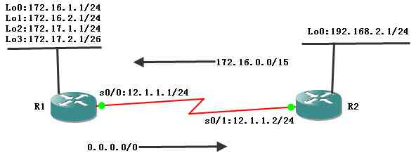

[CCNA图文笔记]-16-路由有类查找和无类查找
引言
这篇文章通过一个实例介绍路由表的结构和路由查找过程，重点讨论什么是路由有类查找（no ip classless）和路由无类查找（ip classless）。
文章目录
- 0×1.路由表结构
- a.级别1路由（Level 1 Route）
- b.父路由（Parent Route）
- c.子路由（Child Route）
- d.最终路由（Ultimate Route）
- 0×2.路由查找过程
0×1.路由表结构
首先如下图所示配置R1和R2；R1上面有4个回环接口，其中Lo3的子网掩码长度是26，在R1上有一条默认路由指向R2的s0/1接口IP，R2上面有一条静态路由指向R1的s0/0接口IP：
R1配置：
R1(config)#int s 0/0 R1(config-if)#ip add 12.1.1.1 255.255.255.0 R1(config-if)#no shut R1(config-if)#int lo 0 R1(config-if)#ip add 172.16.1.1 255.255.255.0 R1(config-if)#no shut R1(config-if)#int lo 1 R1(config-if)#ip add 172.16.2.1 255.255.255.0 R1(config-if)#no shut R1(config-if)#int lo 2 R1(config-if)#ip add 172.17.1.1 255.255.255.0 R1(config-if)#no shut R1(config-if)#int lo 3 R1(config-if)#ip add 172.17.2.1 255.255.255.192 R1(config-if)#no shut R1(config-if)#exit R1(config)#ip route 0.0.0.0 0.0.0.0 12.1.1.2 R1(config)#end
R2配置：
R2(config)#int s 0/1 R2(config-if)#ip add 12.1.1.2 255.255.255.0 R2(config-if)#no shut R2(config-if)#int lo 0 R2(config-if)#ip add 192.168.2.1 255.255.255.0 R2(config-if)#no shut R2(config-if)#exit R2(config)#ip route 172.16.0.0 255.254.0.0 12.1.1.1 R2(config)#end
配置完成后查看R1和R2的路由表：
/*查看R1路由表*/ R1#show ip route 172.17.0.0/16 is variably subnetted, 2 subnets, 2 masks C 172.17.1.0/24 is directly connected, Loopback2 C 172.17.2.0/26 is directly connected, Loopback3 172.16.0.0/24 is subnetted, 2 subnets C 172.16.1.0 is directly connected, Loopback0 C 172.16.2.0 is directly connected, Loopback1 12.0.0.0/24 is subnetted, 1 subnets C 12.1.1.0 is directly connected, Serial0/0 S* 0.0.0.0/0 [1/0] via 12.1.1.2 /*查看R2路由表*/ R2#show ip route 12.0.0.0/24 is subnetted, 1 subnets C 12.1.1.0 is directly connected, Serial0/1 C 192.168.2.0/24 is directly connected, Loopback0 S 172.16.0.0/15 [1/0] via 12.1.1.1
对于这个路由表的结构可能大家会有疑问，为什么R2中像"172.16.0.0/15 [1/0] via 12.1.1.1"和"192.168.2.0/24 is directly connected, Loopback0"这样的路由只显示成一行，而"12.0.0.0/24 is subnetted, 1 subnets"却显示了两行？上面这种输出格式，是路由级别决定的，那什么是路由级别呢？请看下面的详细说明。
a.级别1路由（Level 1 Route）
级别1路由是指一条路由使用的子网掩码小于或等于有类网络的默认子网掩码（什么是"有类网络的默认子网掩码"？例如在IPv4中，192.168.1.0/24就是一个C类网络，C类网络的默认子网掩码长度就是24）。
级别1路由包括：
网络路由：一条路由使用的子网掩码等于有类网络默认的子网掩码，比如R2上的192.168.2.1/24；
超网路由：一条路由使用的子网掩码小于有类网络默认的子网掩码，比如R2上的172.16.0.0/15；
默认路由：比如R1上的0.0.0.0/0；
对于上面列出的三种路由，在路由表中只显示成一行。
b.父路由（Parent Route）
注意上面R2的路由表中"12.0.0.0/24"就是一条父路由，父路由不包括下一跳地址或本地路由的外出接口；父路由实际上只是一个头部，暗示后面还有级别2的路由，级别2的路由也称为子路由。
无论什么时候，只要路由表中出现一条子网掩码长度大于默认有类网络子网掩码的路由，父路由就会被创建。
在R2的路由表中"12.0.0.0/24 is subnetted, 1 subnets"表示的是父路由，子网掩码的位数是24，该主类网络在路由表中有一个子网。
R1的路由表中的"172.17.0.0/16 is variably subnetted, 2 subnets, 2 masks"也是一条父路由，因为子路由拥有不同的子网掩码，所以父路由的子网掩码使用主类网络默认的子网掩码16。"variably subnetted"表示是变长子网，有两个子网，有两种掩码，不同的子网掩码在子路由中分别表示。
R1中的"172.16.0.0/24 is subnetted, 2 subnets"也是一条父路由，因为两个子路由的掩码长度都相同，所以在父路由中用/24表示出来，父路由中已经表示了子网掩码长度，子路由就不必再表示了。
c.子路由（Child Route）
子路由中明确的标出了下一跳的IP地址或本路由的外出接口；如果所有子路由的子网掩码相同，相同的子网掩码将在父路由中表示出来，子路由中就不再显示子网掩码长度了，比如R1中的"172.16.1.0 is directly connected, Loopback0"和"172.16.2.0 is directly connected, Loopback1"；
如果子路由拥有不同的子网掩码长度，子网掩码将在每个子路由中单独表示出来，而父路由则使用默认主类网络掩码表示，如R1中的"172.17.1.0/24 is directly connected, Loopback2"和"172.17.2.0/26 is directly connected, Loopback3"。
d.最终路由（Ultimate Route）
所谓的最终路由是指路由条目中包含下一跳路由器的IP地址或本路由的外出接口；除父路由外，所有级别1的路由和子路由都是最终路由。
0×2.路由查找过程
当一个路由器收到一个IP报文时，检查目的IP地址，按照下面的步骤查找路由表：
1）路由器根据目的IP查找级别1路由，依次查找网络路由（包括父路由）、超网路由、默认路由，如果最佳匹配（子网掩码最长匹配）是级别1路由的最终路由（路由条目中包含下一跳IP或本地外出接口），那么这条路由用来转发数据包；
2）如果最佳匹配的是级别1中的父路由，继续下一步查找即查找该父路由的子路由，如果找到匹配的子路由，则这条子路由用来转发数据包；
3）如果子路由没有匹配，继续下一步查找，此时判断路由执行的是有类查找还是无类查找（有类或无类查找是通过ip classless和no ip classless这两条命令来控制的），如果是有类查找则跳到第4步，如果是无类查找则跳到第5步。；
4）有类路由行为：终止查找，丢弃数据包；
5）无类路由行为：继续查找级别1的超网路由和默认路由，如果没有超网路由匹配，也没有默认路由匹配，则终止查找，丢弃数据包。如果找到匹配，则使用找到的路由条目进行转发；
下面使用本文第一部分中的拓扑图来演示上面介绍的路由查找过程。
路由查找实例一：在R2上新增加一个Loopback1并配置IP（2.2.2.2/24),然后在R1上去ping R2的lo1；
/*新增一个回环接口lo1*/ R2(config)#int lo 1 R2(config-if)#ip add 2.2.2.2 255.255.255.0 R2(config-if)#no shut R2(config-if)#end /*在R1上去ping R2新增的这个回环接口地址*/ R1#ping 2.2.2.2 !!!!! /*可以ping通*/
通过R1的路由表分析R1的查找过程如下：
1）依次查找级别1路由，此时R1上只有一条级别1路由，即默认路由；
2）找到默认路由"0.0.0.0/0 [1/0] via 12.1.1.2"，这是一条最终路由，下一跳是12.1.1.2；
3）使用这条路由转发，R1将数据发往R2；
路由查找实例二：路由R1上去往12.1.1.2的数据包查找过程；
1）R1查找级别1路由；
2）找到最佳匹配12.0.0.0/24，这是一条级别1的父路由，继续下一步查找；
3）查找这条父路由的子路由，子路由中的12.1.1.0/24匹配12.1.1.2，R1根据这条路由，将数据从自己的s0/0发送出去；
路由查找实例三：R1去往172.16.3.1的数据包查找过程；
注意！无类查找需要让R1执行进程交换而不是快速交换，默认的快速交换会影响无类路由查找过程。
在R2上新增一个回环接口loopback2给它分配IP地址172.16.3.1/24,然后在R1上使用进程交换并且使用有类查找：
/*在R2上增加新回环接口*/ R2(config)#int lo2 R2(config-if)#ip add 172.16.3.1 255.255.255.0 R2(config-if)#no shut R2(config-if)#end /*R1使用进程交换和有类查找*/ R1(config)#no ip cef /*切换到进程交换*/ R1(config)#no ip classless /*切换到有类查找*/ R1(config)#end /*测试ping R2的lo2*/ R1#ping 172.16.3.1 ..... /*无法ping通*/
导致这一步无法ping通的原因是因为R1开启了有类查找，下面是R1路由查找过程：
1）R1根据自身路由表查找级别1路由，找到匹配的父路由172.17.0.0/16；
2）继续下一步查找该父路由的子路由，结果无法找到匹配172.17.3.1的最终路由；
3）路由R1检查自己是使用有类查找还是无类查找，结果发现自己是使用有类查找；
4）停止继续查找，丢弃该数据；
开启R1的无类查找，再次ping测试：
/*使用无类查找*/ R1(config)#ip classless /*再次ping R2的lo2*/ R1#ping 172.16.3.1 !!!!! /*ping成功*/
开启无类查找后R1的路由查找过程：
1）R1根据自身路由表查找级别1路由，找到匹配的父路由172.17.0.0/16；
2）继续下一步查找该父路由的子路由，结果无法找到匹配172.17.3.1的最终路由；
3）路由R1检查自己是使用有类查找还是无类查找，发现自己是使用无类查找；
4）继续查找其他的级别1路由，找到默认路由匹配，使用这条默认路由转发数据；